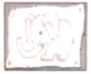
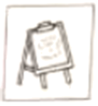
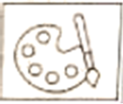
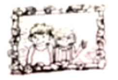

2023年北京市中考英语真题 · 阅读理解 第21、22、23、24、25、26、27、28、29、30、31、32、33题
三、阅读理解 (每题2分, 共26分)
(一) 阅读下列课程介绍, 请根据人物喜好和需求匹配最适合的课程, 并将课程所对应的A、B、C、D选项填在相应位置上。选项中有一项为多余选项。
A
Short Art Courses
A. Wild Art This course is about drawing and painting. You’ll use your new skills to make a wall poster of animals. And we’ve got lots of picture books to give you ideas.  | B. Art Matters This course teaches you different drawing skills. We’ll get you to draw the latest styles of clothes. If you like designing clothes and want to study it at college, join us!  |
C. Creative Art This course is about making bags to keep your sports clothes in. We provide lots of materials. And you’ll visit art museums to get some creative ideas. 
| D. Art Magic This course is about telling good stories in pictures. There’ll be cartoon films to watch and instruction in how to draw your favorite characters.  |
21. ________ I’m interested in designing clothes and want to study it at college.
Alice
22. ________ I enjoy making wall posters of animals and I’d like to read picture books.
Tony
23. ________ I like making hags and want to visit art museums to get creative ideas.
Harry
(二) 阅读下列短文, 根据短文内容, 从短文后各题所给的A、B、C、D四个选项中, 选择最佳选项。
B
Betty was excited to show her brother David the basket filled with seashells. But David was busy helping Dad get everything back into the car. “What are you going to do with those useless things?” he said. “You can’t take them home.”
“But I want these seashells,” Betty said unhappily. “Each one is a different shape and size. They are all special.”
Suddenly, David saw the water rising along the beach. He shouted to Betty, “The waves （海浪）are about to take your toys!” As Betty ran to get her things, she called to David, “Please put my seashells into the car!”
David was putting one of the beach chairs into the car when his foot accidentally knocked over the basket. As David lifted a heavy box, he slipped（滑倒）and dropped the box right on top of the seashells, breaking most of them into pieces.
Betty came back with her toys. When she saw her seashells broken, she began to cry. David started to pick up the seashells and place them carefully back into the basket.
Dad tried to explain to Betty that it was an accident. But Betty was still upset. David also felt sad. He thought about what he could do to make it up to his sister. When he got home, he had a perfect idea.
The next morning David waited for Betty with the basket of seashells and some strong glue. He also had a framed（装框的）photo of the two of them. Together they looked through the basket and found several seashells that were not broken and could still be used. Then they glued the seashells to the frame.
“I’m really sorry, Betty.” David said. “Yesterday I was very careless with something special to you.”
Betty looked at her brother and smiled. “You’re the best big brother ever!”

24. What did Betty think of the seashells?
A. Clean.B. Useless.C. Expensive.D. Special.
25. Betty began to cry when ________.
A. she slipped and hurt herselfB. she knocked over the basket
C. she saw the broken seashellsD. she told her dad about the accident
26. David glued the seashells to the frame to ________.
A. make it up to his sisterB. develop his painting skill
C. prepare a gift for his dadD. make the picture beautiful
C
Do you know that over 1/3 of all food produced in the world goes to waste? According to the United Nations (UN), every year around the world, about one billion (十亿) tons of food is wasted. At the same time, there are nearly one billion people who go hungry. Simply 1/4 of the food wasted is enough to keep them out of hunger. In addition, the wasted food produces over three billion tons of carbon dioxide (CO2), which speeds up climate (气候) change. What can we do to solve this food waste problem?
One effective solution is balancing food production with demand (需求). In hotels and other similar places, special instruments should be used so that cooking specialists just prepare and cook food as it is ordered.
Another effective solution is starting programs to reduce (减少) food waste. Stores and buyers can try their best to be creative in food waste reduction. For example, stores can provide customers with instructions telling them how to make full use of food. Buyers can try not fixing their eyes only on food of the best quality (质量). Sometimes, the food of non-top quality is also good enough to eat, or can be bought and then used to make delicious dishes.
One of the hardest solutions to achieve is for each and every one to buy and prepare food with a plan of their own so that less food is wasted. Challenging as it is, the use of meal plans in preparing food can play an important role in ending food waste in the family.
Food recycling is one of the known solutions. Efforts are now already in progress. Food that is not safe for humans to eat is recycled into other products such as animal feeds and clothing. Yet, there is still a long way to go and much for improvement in this area.
In a word, food waste has been one of the biggest problems in the world that have influenced us greatly. Many solutions have been found and many more are yet to be worked out. If each of us can put in more efforts, food waste is sure to be reduced for the good of our future.
27. According to the passage, what is a possible result of food waste?
A. The problem of worldwide hunger.B. A big increase in food production.
C. The speed-up of climate change.D. A sudden drop in population.
28. What can we learn from the passage?
A. Food recycling has been hugely successful.B. Buyers should give up non-top quality food.
C. Stores should train people to make delicious dishes.D. Meal plans in the family are hard to put into practice.
29. What is the passage mainly about?
A. Benefits of reducing food waste.B. Solutions to the food waste problem.
C. The importance of fighting food waste.D. The attitude to the food waste problem.
D
When considering the kind of experience that makes life better, most people first think that happiness depends on experiencing pleasure: good food, good jobs, all the comforts that money can buy. If we couldn’t have these, we might as well sit in front of the television on a quiet evening.
Pleasure is an important part of the quality of life, but by itself it doesn’t bring happiness. When people think further about what makes a worthy life, they tend (倾向于) to move beyond pleasant memories and begin to remember other events, other experiences that overlap (有重叠) pleasurable ones but fall into a group with a separate name: enjoyment. Enjoyable events take place when people have not only satisfied a need or met some earlier expectation, but also achieved something unexpected.
Enjoyment is characterized by a sense of curiosity of achievement. Playing a tennis game that improves one’s ability is enjoyable, as is reading a book that shows things in a new light, as is having a conversation that leads us to express ideas we didn’t know we had. None of these experiences may be especially pleasurable when they are taking place, but when we think back on them afterwards, we would say, “That really was fun” and wish they would happen again. After an enjoyable event we know that we have changed, and grown.
of achievement. Playing a tennis game that improves one’s ability is enjoyable, as is reading a book that shows things in a new light, as is having a conversation that leads us to express ideas we didn’t know we had. None of these experiences may be especially pleasurable when they are taking place, but when we think back on them afterwards, we would say, “That really was fun” and wish they would happen again. After an enjoyable event we know that we have changed, and grown.
Experiences that give pleasure can also give enjoyment, but the two feelings are quite different. For example, everybody takes pleasure in eating. However, to enjoys food is more difficult — you have to pay enough attention to a meal, so as to sense and tell its various tastes. As this example suggests, we can experience pleasure without any psychic energy, while enjoyment happens only as a result of full attention. A person can feel pleasure without any effort, as long as certain parts in his brain are stimulated (刺激). But it’s impossible to enjoy a tennis game or a book without full attention. It’s for this reason that pleasure does not last long, nor does it make us grow. Growth requires full attention to goals that are new, that are relatively challenging.
Without enjoyment, life will go on, and it can even be pleasant. But it depends heavily on luck and the external (外部 ) environment. To achieve personal control over the quality of experience, however, we need to learn how to build enjoyment into what happens day in, day out.
) environment. To achieve personal control over the quality of experience, however, we need to learn how to build enjoyment into what happens day in, day out.
30. You will most probably experience enjoyment when you ________.
A. buy expensive shoesB. order a delicious meal
C. talk with friends for new ideasD. sit quietly in front of a television
31. What do you know about pleasure and enjoyment from the passage?
A Enjoyment grows out of pleasure.
Enjoyment grows out of pleasure.
B. Pleasure and enjoyment come hand in hand.
C. Pleasurable experiences are part of enjoyable ones.
D. Some experiences provide both pleasure and enjoyment.
32. The words “psychic energy” in Paragraph 4 are closest in meaning to ________.
A. attentionB. interestC. abilityD. knowledge
33. The writer probably agrees that ________.
A. feeling pleasure stops people from achieving growth
B. feeling enjoyment comes with achieving growth
C. a worthy life depends on luck and environment
D. pleasure is the key to a happy and worthy life
第二部分
本部分共5题, 共20分。根据题目要求, 完成相应任务。